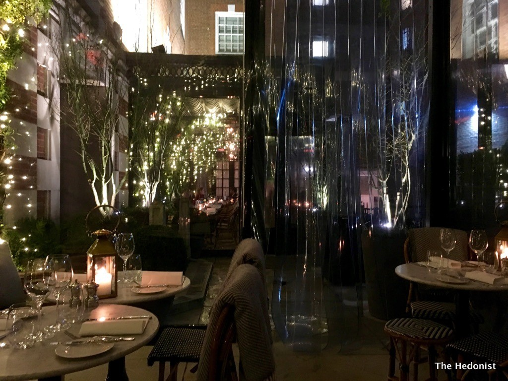

Our Global Locations
Now Open In Other Locations!

CALIFORNIA

Elegant, poetic and quintessentially English space.
Fully heated throughout the year, the restaurant offers the peace and charm of a secluded secret garden in the winter,
and a light, elegant and beautiful al fresco space in the spring and summer months.
All-day meals & afternoon tea served on an elegant, ornate terrace within the Bloomsbury Hotel.
FOR THE TABLE
Marinated Nocellara olives VE | £4
Bread basket, homemade Guinness bread, grilled focaccia & olive campaillou V GF | £5
Courgette fritti, basil aioli V GF | £10
STARTERS
Salmon Gravadlax, sourdough crisp, caper berries & dill mustard dressing | £14
Grilled tiger prawns, smoked garlic butter & samphire GF | £15
Tuna ceviche, avocado, chilli & citrus dressing GF | £16
Chicken liver parfait, brandy soaked sultanas & toasted brioche | £12.5
SALADS
Caesar salad, pancetta, rosemary croutons, parmesan & anchovy dressing | £15
Superfood spinach salad, broccoli, edamame, chia, sesame & chilli VE GF | £16.5
Heritage beetroots, whipped goats curd, chicory, frisée & seeded cracker GF | £15
Add: Grilled chicken £8 | Tiger prawns £10
PLATS DU JOUR
Monday | Thai baked sea bass, steamed fragrant rice & soy GF | £32
Tuesday | Ragout of heritage beef, fresh tagliatelle | £24
Wednesday | Isle of Mull scallops gratin, smoked bacon & gruyere | £30
Thursday | Tomahawk for two, fat chips, field mushrooms, grilled tomato & a selection of sauces GF | £85
Friday | Herb roasted baby chicken, lemon aioli GF | £28
MAINS
Whole Dover Sole - grilled or meunière GF | £38
Wild mushroom risotto, Twineham Grange cheese & Autumn black truffle V GF | £24
Black cod fillet with miso glaze, pak choy & sticky Jasmine rice GF | £30
Black Angus grass-fed steak, Café de Paris butter & fries
230g Ribeye steak £35 | 200g Fillet £39
SIDES
Fries VE | Chips VE GF | £6
Buttered heritage potatoes V GF | £6
Roasted cauliflower & salsa verde VE GF | £7
Sauteed wild mushrooms V GF | £6.5
Purple sprouting broccoli with chilli & lemon VE GF | £7.5
V vegetarian | VE vegan | GF gluten free
COFFEE AND TEA
Americano, Espresso, Macchiato, Cappuccino, Latte, Flat White,
English Breakfast, Earl Grey, Green Dragon, Moroccan Mint, Fruity Camomile, Sweet Berries,
Darjeeling Summer Gold, Lemon Fresh, Ayurveda Herbs & Ginger
Fresh Juice /£5
Orange | Apple | Grapefruit | Cranberry
STARTERS
Mango & Tumeric Smoothie Bowl VE
Pistachio & chia
Roasted Romano Pepper Bruschetta V
Goats cheese, fresh basil & capers
Chickpea & Courgette Falafels V
Hummus, black olives & feta
Oak Smoked Salmon & Poppy Seed Bagel
Chive cream cheese & house pickle
MAINS
Atlantic Prawn & Avocado Ceaser
rosemary croutons, parmesan & anchovy dressing
Augergine Parmigiana V
rocket & balsamic
Grilled English Asparagus
San Danielle & smoked romesco
Buttermilk Pancakes
crispy bacon, blueberries & maple syrup
SIDES
Twineham Grange & truffle fries V GF | £8
Fries VE | Chips VE GF | £6
Buttered heritage potatoes V GF | £6
Spinach | steamed VE | buttered V | olive oil VE | £6
Roasted cauliflower & salsa verde VE GF | £7
Sauteed wild mushrooms V GF | £6.5
Purple sprouting broccoli with chilli & lemon VE GF | £7.5
EXTRA SIDES
White, wholegrain or sourdough toast V /£2
Plum tomato V, Mushrooms V, 2 Copper Maran eggs any style, Sweet-cured bacon, Avocado V /£4
Truffle & Parmesan fries /£8
For the table
Marinated Nocellara olives VE | £4
Bread basket, homemade Guinness bread, grilled focaccia & olive campaillou V GF | £5
Courgette fritti, basil aioli V GF | £10
Starters
Salmon Gravadlax, sourdough crisp, caper berries & dill mustard dressing | £14
Autumn squash soup, Stilton & toasted pine nuts V GF | £9
Dressed Dorset crab, celeriac remoulade & house Guinness bread | £16.5
Buffalo milk burrata, chargrilled peppers, datterini & capers V | £16
Grilled tiger prawns, smoked garlic butter & samphire GF | £15
Tuna ceviche, avocado, chilli & citrus dressing GF | £16
Chicken liver parfait, brandy soaked sultanas & toasted brioche | £12.5
Heritage beetroots, whipped goats curd, chicory, frisée & seeded cracker GF | £15
Plats du jour
Monday | Thai baked sea bass, steamed fragrant rice & soy GF | £32
Tuesday | Ragout of heritage beef, fresh tagliatelle | £24
Wednesday | Isle of Mull scallops gratin, smoked bacon & gruyere | £30
Thursday | Tomahawk for two, fat chips, field mushrooms, grilled tomato & a selection of sauces GF | £85
Friday | Herb roasted baby chicken, lemon aioli GF | £28
Mains
Whole Dover Sole - grilled or meunière GF | £38
Chicken Milanese, rocket & parmesan salad | £28
Roasted fillet of organic salmon, char grilled broccoli & Béarnaise GF | £27
Massaman king prawn curry, potato, green beans & spiced cashews GF | £26
Fresh linguine, Portland crab, chilli, lemon & datterini | £28
Wild mushroom risotto, Twineham Grange cheese & Autumn black truffle V GF | £24
Black cod fillet with miso glaze, pak choy & sticky Jasmine rice GF | £30
Black Angus grass-fed steak, Café de Paris butter & fries
230g Ribeye steak £35 | 200g Fillet £39
Now Open In Other Locations!
Celebrations taken to a next level
RESERVATIONS:Please note, our maximum party size is 6 guests.
OUR ADDRESS:
Dalloway Terrace
16-22 Great Russell Street, London
WC1B 3NN
DAILY OPENING HOURS:
Monday - Sunday: Midday – 9.30pm (Last orders 10pm)
*Closed at 11.30pm